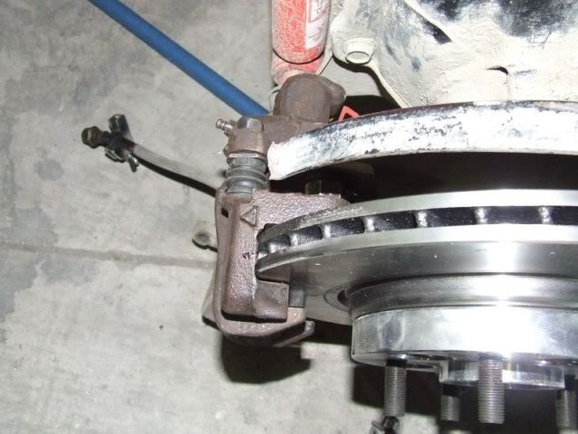

-
Maybe it's an optical illusion, but it looks like there is pad overhang with the Wilwoods…confirm/deny?
1987 Nissan 300ZX Turbo (Budget Supercar)
1987 Nissan 200SX SE (Old School FR)
1994 Nissan Sentra SE-R (Balls To The Wall Track Car)
2000 Nissan Maxima SE (Daily Driver)
2006 Scion tC (Wife Whip)
In an ideal world I would have all ten fingers on my left hand, so my right hand could just be a fist for punching. -
Looking at his other pictures I see the same
were you able to correct that Adam?1984 300ZX - 1988 VG30T Engine, Trans, Diff, ECU
1987 300ZX TURBO - ( Parts Car ), 1988 300ZX TURBO - ( Parts Car )
1972 240Z -- Full restore - L28ET L6 Engine from 280zx, T-5 transmission, Rear diff from the 87
1998 Mazda B-2500, And a lot of bikes -
There is zero pad overhang. That was the only picture I have currently and was during fitment. The caliper isnt bolted tight and the rotor wasnt pressed up against the hub, I was busy trying to center everything to figure out shims. With everything tight, the pad is fully seated.
In the future I plan on replacing the rotor with a 2 piece using a larger diameter hat. You can see the ring where the pad isnt hitting the bottom portion of the rotor.86na - BlueZ
Shiro #366 - Kouki Monster
85t - Mr Tickles -
sweet that had me worried for a little because that is my next mod1984 300ZX - 1988 VG30T Engine, Trans, Diff, ECU
1987 300ZX TURBO - ( Parts Car ), 1988 300ZX TURBO - ( Parts Car )
1972 240Z -- Full restore - L28ET L6 Engine from 280zx, T-5 transmission, Rear diff from the 87
1998 Mazda B-2500, And a lot of bikes -
There is loads of options for a front brake Upgrade, so now am investigating fitting 88 Turbo Rear Calipers on an 84-86 Early style control arms.
I can confirm that the 88 caliper bolts up successfully to an 85T rear control arm.
When dummy fitting the SOLID rotor With the Vented Caliper the offset or height of the rotor seems to be too large
listed as 47mm for an 85 turbo rear rotor - & 57mm for an 88 turbo rear rotor.
This means using an 88turbo rear rotor is out of the question, and finding a large diameter vented rotor with a low offset seemed highly unlikely until i found this Jaguar or a 2000 S Type ( X200 series )
The Jag Rotor is listed as 288 OD with a height of 33mm and a Center bore of 64.5, while 5 stud i believe it is 108 or 110 PCD
I believe that if the Center-bore was opened up to 68mm and this rotor was re drilled as 5x114 that this would be suitable for use on 84-85 Rear control arms using 88 Turbo Vented Rear calipers.
This would potentially require spacers to bring the caliper away from its mounting bracket by a few mm.
[attachment=0:vh1wy0dv]jag rotor.png[/attachment:vh1wy0dv]
I put this forward as an option to those who do not have aces to late style 88 rear control arms.
I am In New Zealand and the cost of shipping would be prohibitive, I estimate Machining time to be approx 1hr or $60 on top of the cost of Jaguar Rotors
Now my Question's
Has anybody done anything simialr to save my time and dollars from inventing a new method ?
Can Anybody else Find a better Option for a rotor ? Keeping in mind the total height needs to be lower than 47mm to stop the rotor hitting the caliper.
if not would Users of Z3P make use of a full writeup to fit a vented setup on a 84-85 car ? If nobody is interested in doing this conversion it is a waste of time to do a detailed write up.
an example of my other writeup can be found here viewtopic.php?f=24&t=26792
EDIT >
Been out to do some measuring
OD of Rear Hub is 154.8 - 155mm
you zoom in you can read the measurement , so that definitely fit inside the Jag Quoted measurement of 159mm
Measuring Between the Pad Carrier i get 24mm
Using a straight edge the face of the Hub to the Edge of the pad Carrier is 43mm
43m ( hub to pad carrier ) minus 12.1 leaves me 31mm from the face of the hub to the center line of where the rotor needs to be.
By looking at the Jag Drawing the inside of the rotor hat Minus half the thickness of the rotor leaves 15.5 ( face of hub to center line of rotor)
So by those measurements this should completely work providing I use a 14.5mm Spacer85 Turbo Slick Top
__________________________________________________ _____ -
What would be nice is for someone to make the rear Z32 calipers work on the Z31 rear control arm. I know the problem is the parking brake function, which can be remedied with a Wilwood line lock setup.
1986 300ZX Turbo…sold
1990 Skyline GT-R…new money pit
2014 Juke Nismo RS 6-speed…daily -
I think companies like Will wood make dedicated parking brake calipers
somewhat simialr to these pictures
http://www.panteraperformance.com/Photo … stems.html85 Turbo Slick Top
__________________________________________________ _____ -
I know that company they make some pretty cool kit cars for that pantera1984 300ZX - 1988 VG30T Engine, Trans, Diff, ECU
1987 300ZX TURBO - ( Parts Car ), 1988 300ZX TURBO - ( Parts Car )
1972 240Z -- Full restore - L28ET L6 Engine from 280zx, T-5 transmission, Rear diff from the 87
1998 Mazda B-2500, And a lot of bikes -
Probably tons more expensive than a line lock & leaving your car in gearRXGhost wrote: I know that company they make some pretty cool kit cars for that pantera
Anyway, i have Ordered some Jag rotors so hopefully by next week i can put up some pictures of fitment and spacers ect.85 Turbo Slick Top
__________________________________________________ _____ -
Ok so Here is a Mock up consisting of the follow
88 Turbo Rear Calipers
Jaguar S Type X200 Model series Rear Rotors 288mm x 20mm
Longer Bolts
Spacer for the caliper


So Vented rear brakes on an 85 Turbo is now possible, Vented Rear brakes on an 85NA will require a completely different setup. I am in discussions with Russ84NA about how we can utilize 88 calipers on an 84- 85NA
Full Write For installation on an 85 Turbo will be made in the next 2-4 Days85 Turbo Slick Top
__________________________________________________ _____ -
Hey guys I am kind of new to the z31 scene. What is the cheapest upgrade for an '87 na? Should I machine down the hubs and get turbo rotors and longer studs? Do I have to run the turbo calipers? -
This is cool stuff for the rear if I wasn't swapping to -13 rear i would be jumping right on this great info james1984 300ZX - 1988 VG30T Engine, Trans, Diff, ECU
1987 300ZX TURBO - ( Parts Car ), 1988 300ZX TURBO - ( Parts Car )
1972 240Z -- Full restore - L28ET L6 Engine from 280zx, T-5 transmission, Rear diff from the 87
1998 Mazda B-2500, And a lot of bikes -
After about 1k miles, this weekend the brake pedal became very firm. Before with the stock z31 BMC I would have to put my pedal to the floor in order to get them to lock up. Now it feels the same as running z32tt calipers + z31 BMC. Must have been some trapped air in the lines that worked itself back to the BMC.adamvann3 wrote: Wilwood Forged Superlites
Needs z32 BMC or equivalent to gain firm pedal
I am very pleased to have pedal feel back in the car. The z31 bmc impresses me with its capabilities.86na - BlueZ
Shiro #366 - Kouki Monster
85t - Mr Tickles -
Nice. How much did this setup cost?adamvann3 wrote: Wilwood Forged Superlites
Piston Diameter: 1.620 in x4
Rotor Thickness:1.250 in
Pads: 150-8854K
Lines: Wilwood s13
Rotors: 350z Track Rotors (12.76")
Custom caliper spacer
Only compatible with late turbo hubs (or modified other)
Needs z32 BMC or equivalent to gain firm pedal
If I already have SS Z32 caliper lines can I use them?Shiro #443

-
This kit looks pretty good for $300 if you're using Z32 calipers.
Thoughts?
http://www.z1motorsports.com/240sx/prod … cts_id=141Shiro #443

Copyright © 2006–. All rights reserved. Privacy Policy